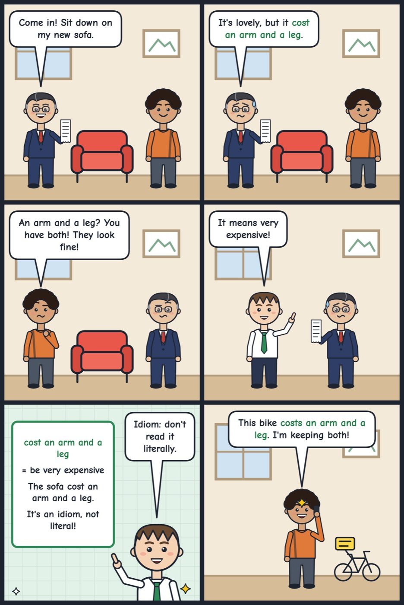

cost an arm and a leg
To be very expensive.
That new sofa cost an arm and a leg, but it's really comfy.
Cost an arm and a leg means very expensive. It is an idiom, so don't read it literally.
Your turn
What cost you an arm and a leg this year?
What cost you an arm and a leg this year?
See it in a comic
